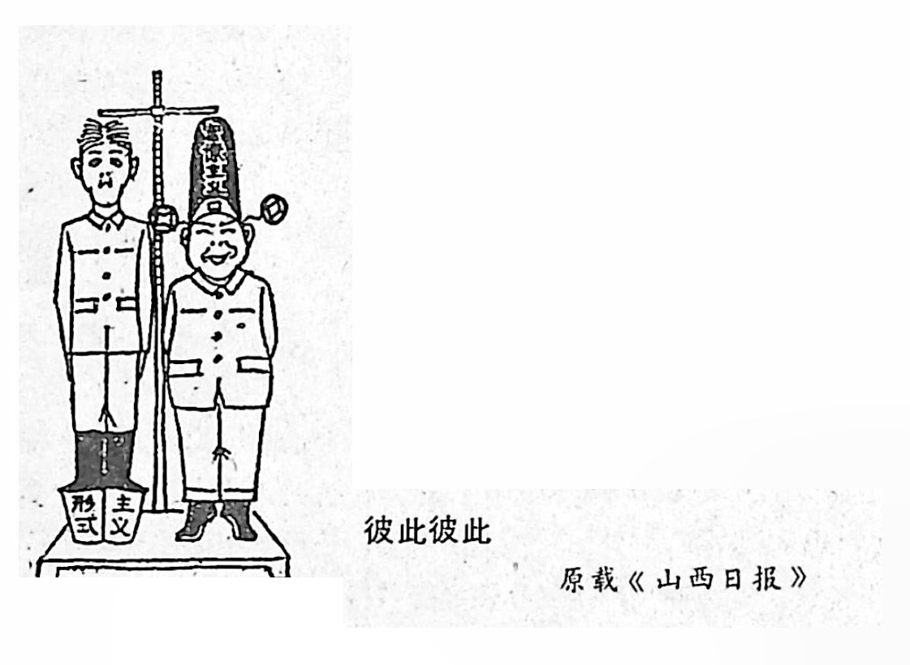

佚名 《人事》1986年第4期（总第7期），第44页（原载《山西日报》）
彼此彼此
Six of One
- Text in the drawing
- 形式 / 主义 (on the boots) / 官僚主义 (on the hat)
Formalism (on the boots) / Bureaucratism (on the hat) - Description
- Two officials stand side by side against a measuring rod. One is raised by boots labeled 形式主义 (formalism). The other, shorter and smiling, makes up the height with a tall hat labeled 官僚主义 (bureaucratism). They come out the same.
- Note
- 彼此彼此: “you and I are the same,” or six of one, half a dozen of the other. Formalism and bureaucratism were paired targets of the period; each gives its man the same false height.
- Artist
- Unattributed 佚名
- Reprinted from
- 《山西日报》 — Shanxi ribao (Shanxi Daily)
- Published in
- 《人事》1986年第4期（总第7期）, p. 44
- Themes
- Formalism · Bureaucratism

Cite
Unattributed, “彼此彼此” [Six of One], Renshi (Personnel) 《人事》, 1986, no. 4, p. 44.